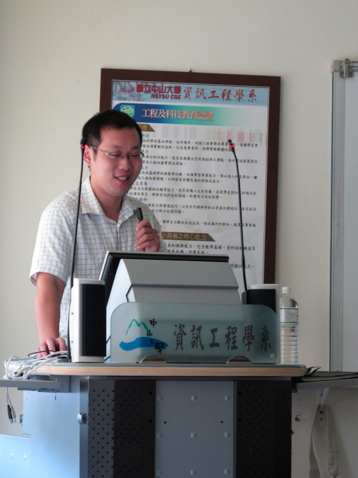
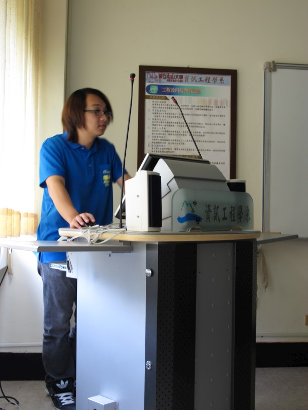
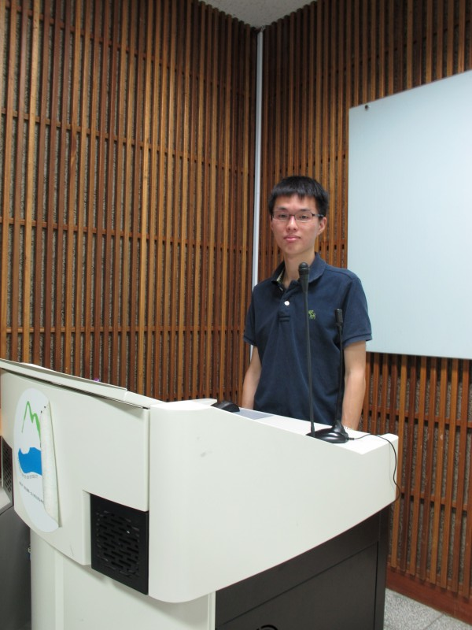
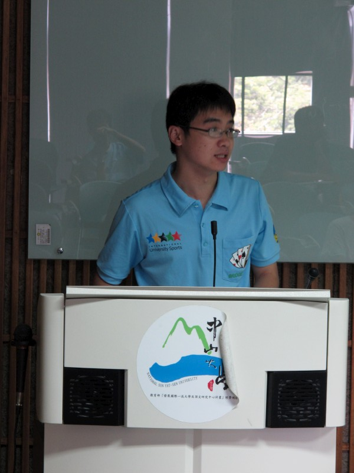
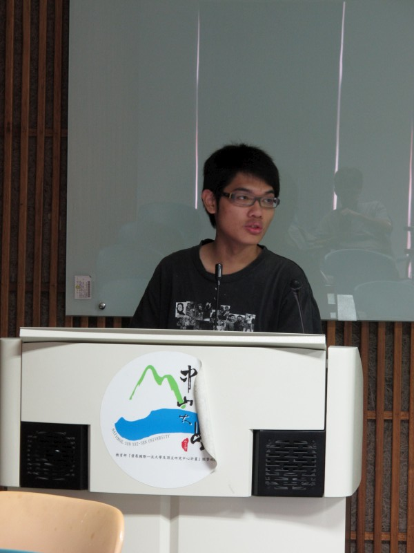

| 日期 |
講師 |
課程大綱 |
教材 |
| 2011/7/6 |
陳紘昕

|
- 分類問題及迴歸問題
- Principle component analysis (PCA)
- Linear discriminant analysis (LDA)
- Quadratic discriminant analysis (QDA)
|
|
| 2011/7/13 |
王重傑

|
- Tanagra
- 使用介紹、資料格式
- 操作方法及常用分類器、feature selection 介紹
- Psipred: protein 二級結構、軟體的使用方法
- Protein 相關特徵值之擷取
|
|
| 2011/7/14 |
周孝岷
|
- GA 的簡介：定義、架構、理論
- GA 演化過程
- 染色體基因編碼、初始化染色體族群、適應函數設計、複製策略、交配策略、突變策略、參數設計
- GA 應用、範例講解
- GP 的簡介：GA、GP的差異
- GP 的應用、範例講解
|
|
| 2011/7/20 |
陳愷瑜

|
- PDB 網站介紹與如何取得 PDB 檔
- CASP 介紹
- PDB、FASTA 檔案格式介紹
- NCBI 網站介紹
|
|
| 2011/7/21 |
林東建

|
- SVM 簡介
- LibSVM 使用說明與範例
- PDBSelect
|
|
| 2011/7/28 |
楊子杰

|
- Introduction
- Classify
- Cluster
- Visualization
- Demo SVM in WEKA
- PSSM、Blast 及其擴充
|
|
| 2011/7/29 |
何秋誼
|
- F-score
- Entropy & mutual information
- Sequential method for feature selection
|
|